KERN — концепт SaaS-платформы, где бренд-команды собирают и версионируют свою типографику: шкалы, токены, адаптивные правила, проверки читаемости и экспорт прямо в код. Кейс сделан кодом, а не картинками: лендинг и девять экранов платформы работают в браузере, на двух языках.
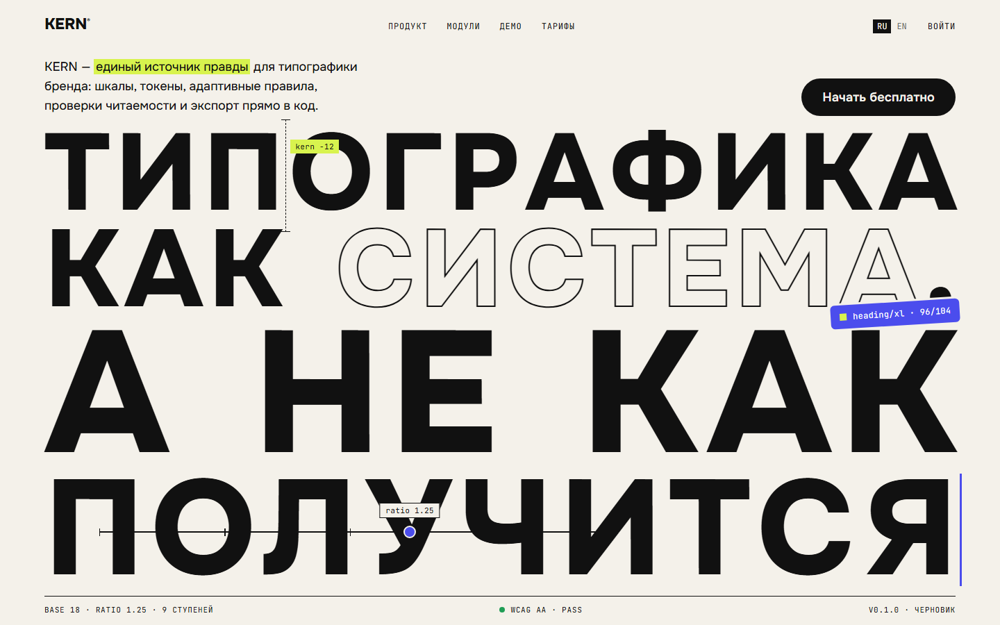
У дизайн-токенов уже есть инфраструктура: Figma Variables, style-dictionary, целые пайплайны. Но типографика в этих системах — просто набор значений. Правила, по которым эти значения построены, нигде не живут: ratio шкалы, поведение между брейкпоинтами, ограничения читаемости.
KERN занимает эту нишу: single source of truth для типографики бренда. Аудитория — четыре роли: design ops настраивают систему, дизайнеры сверяются с ней, разработчики забирают токены в код, бренд-менеджеры следят за консистентностью.
Брендбук 2019 года, styleguide_v3_FINAL(2).fig, устаревший tokens.scss и «какой кегль у H2?» в чате. Размеры расходятся, вес подбирается на глаз, кириллица ломает макеты, а правда о системе хранится в голове арт-директора.
Гипотеза: типографике нужен тот же цикл, что и коду — правила → значения → проверки → версии → экспорт. Тогда «как получится» превращается в систему, которую можно поддерживать командой.
Шрифт — не картинка.
Шрифт — это данные.
Формула главного экрана: сверхкрупный набор + плоский яркий цвет + объекты, взаимодействующие с буквами + утилитарная навигация по краям. Отличие от референсов в том, что сквозь буквы проходят не абстрактные формы, а UI-примитивы самого продукта — линейка кернинга, плашка токена, ползунок шкалы.
Ключевая механика: буквы hero реально дышат весом — ось wght variable-шрифта следует за курсором с гауссовым спадом. Продукт про шрифт демонстрирует себя сам, без единой картинки.
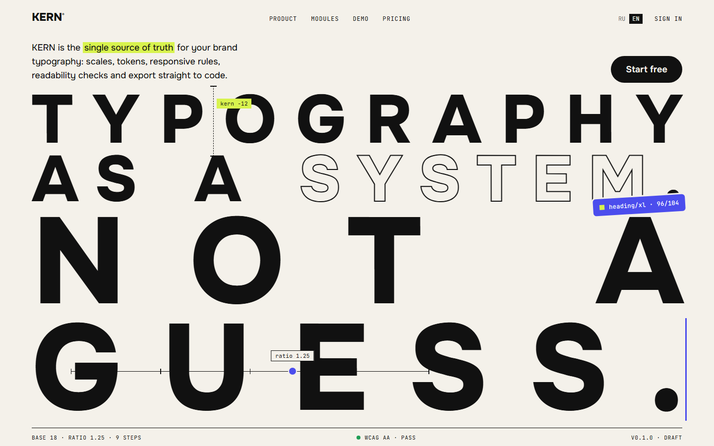
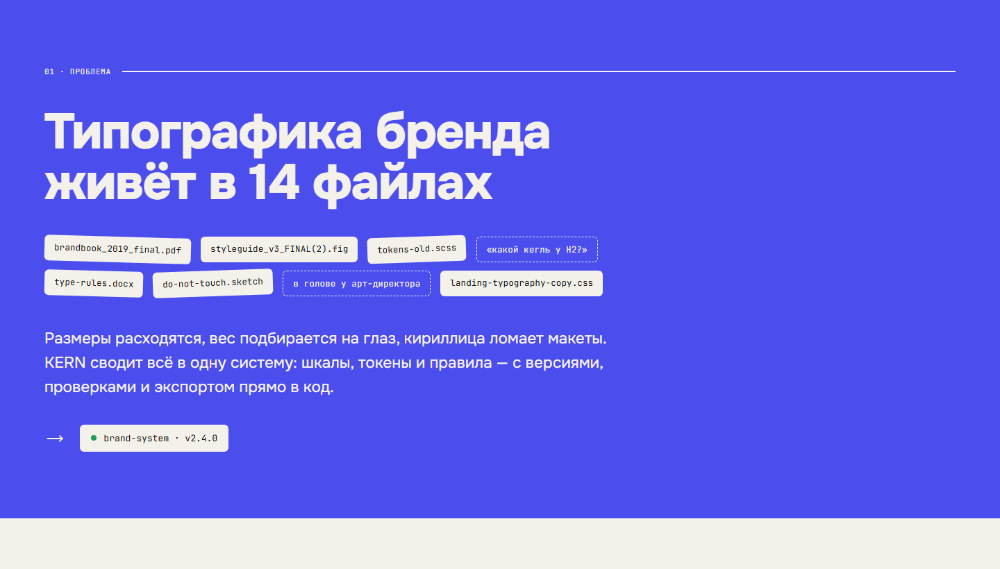
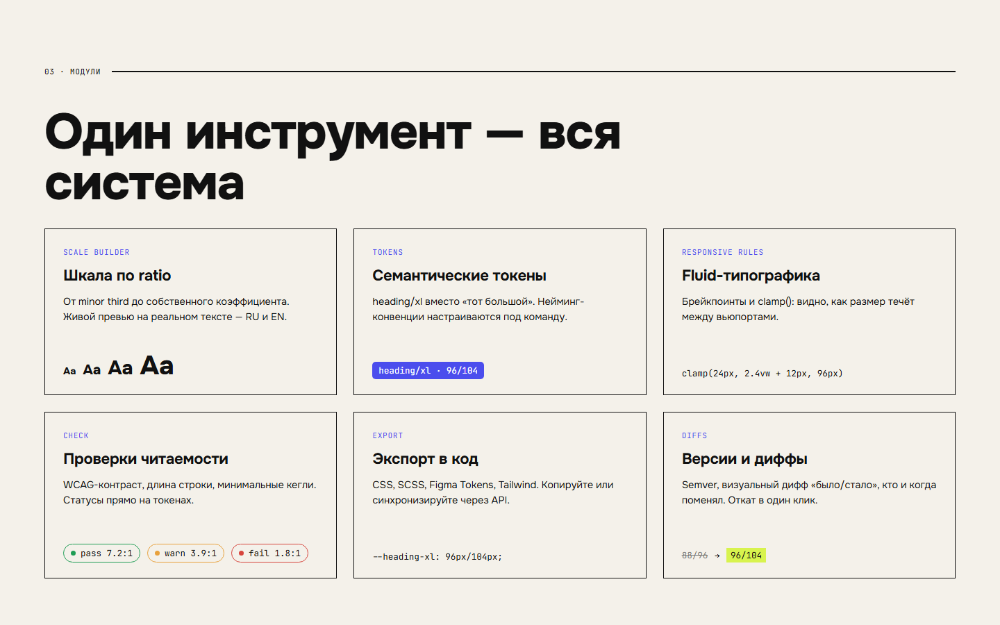
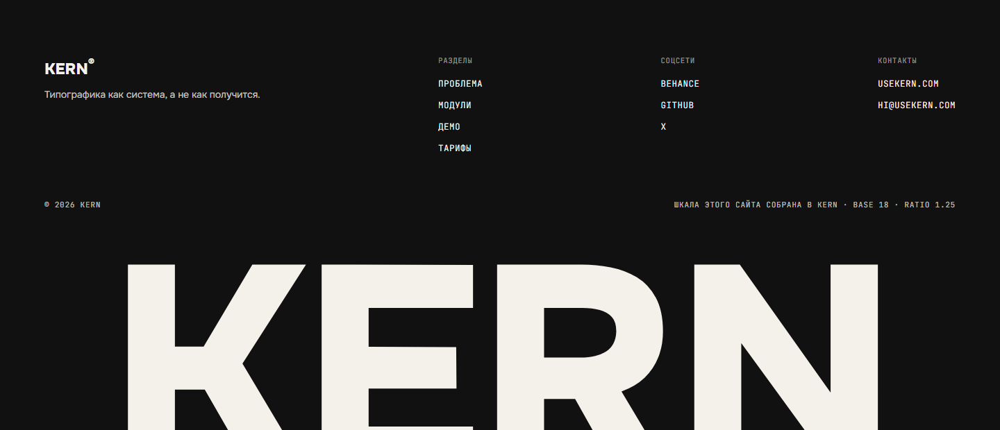
Платформа собрана на привычном из Figma паттерне: сайдбар навигации, рабочее полотно, справа — инспектор выбранного токена. Сетка 8 pt, плотные таблицы, моно-шрифт для всех значений.
Все девять экранов — один живой прототип с общим состоянием: base, ratio и количество ступеней из Scale Builder питают токены, адаптивные правила и экспорт. Меняешь шкалу — меняется всё.
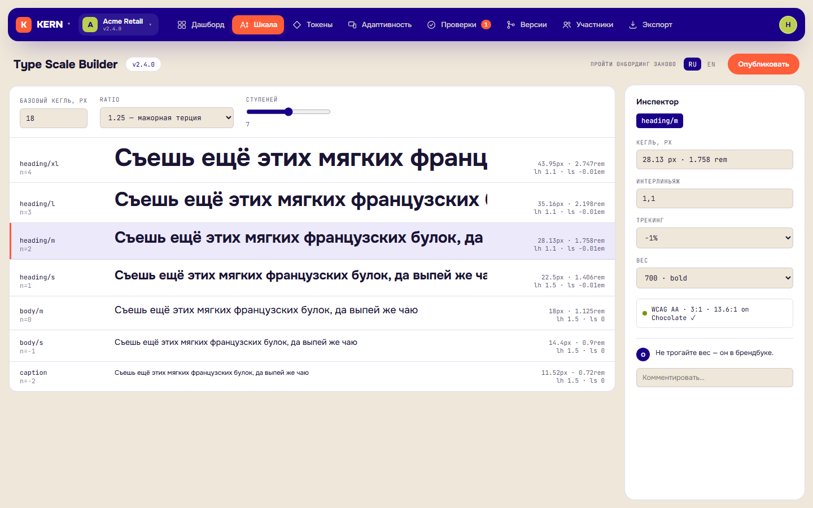
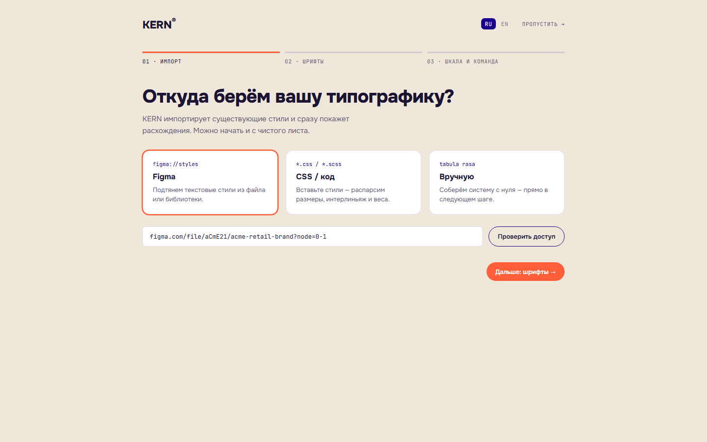
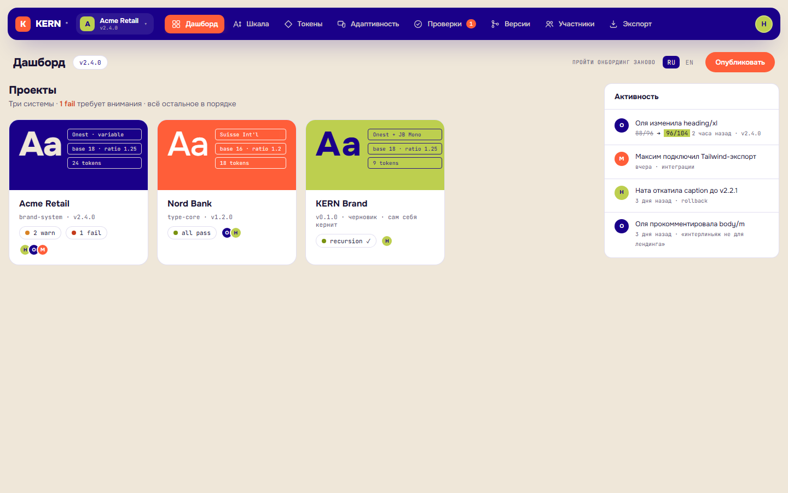
Продукт про читаемость не имеет права пугать красными баннерами. Провал проверки показан спокойно: образец в реальных цветах, точное значение контраста и конкретная подсказка — «поднимите цвет до Paper (5.5:1) или кегль до 14px semibold».
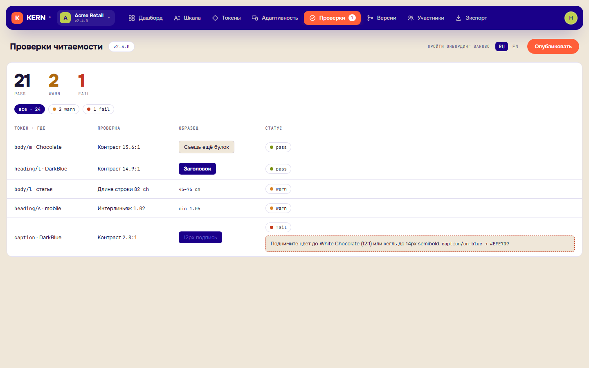
Версии сравниваются на живом тексте: переключатель «было/стало» реально перенабирает строку старым и новым кеглем. Старое значение зачёркнуто, новое — на кислотном маркере. Changelog хранит, кто, что и зачем поменял; откат — одна кнопка.
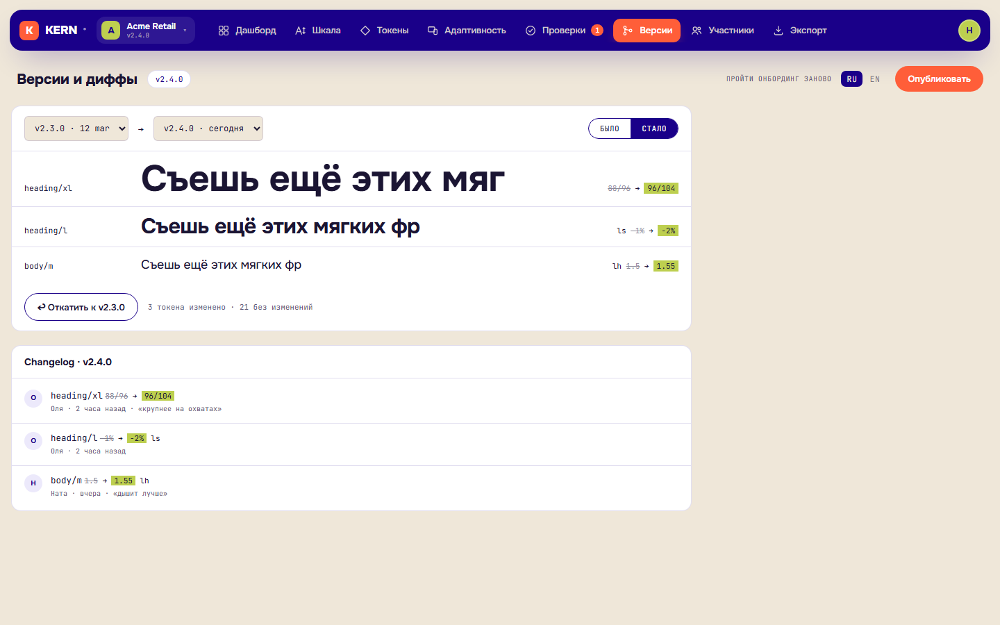
CSS variables, SCSS, Figma Tokens JSON и Tailwind-конфиг генерируются из текущего состояния шкалы — в кейсе это настоящий код, который можно скопировать. Для CI — строка CLI: типографический линт падает, если кто-то захардкодил 17px.
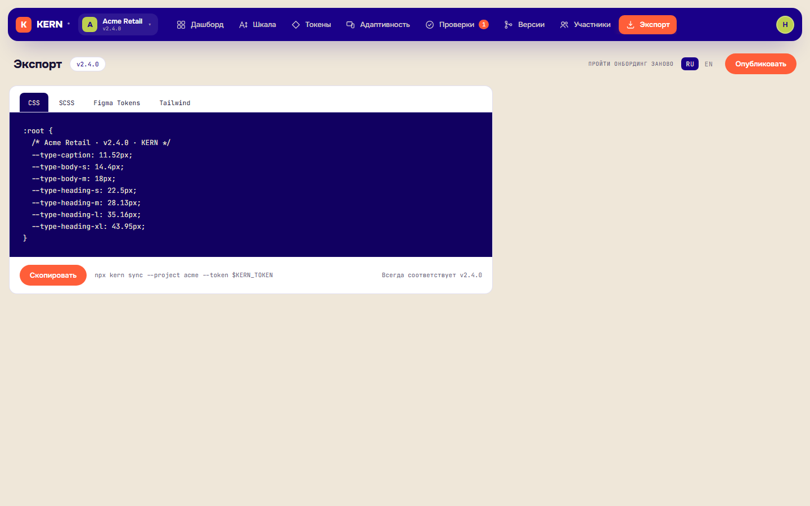
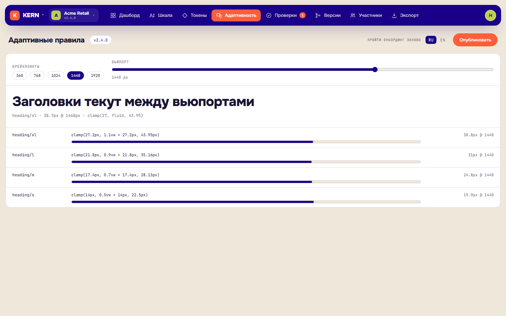
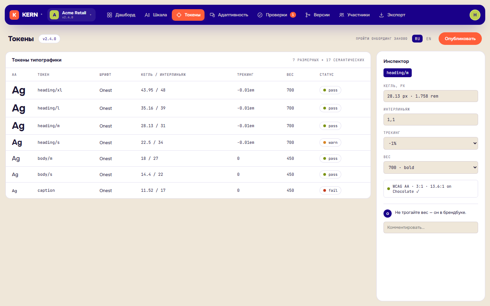
Шкала самого сайта собрана по логике продукта: base 18, ratio 1.25, display-слой до 24vw. Палитра — один активный цвет-поле плюс чёрный и два акцента, плоско и без градиентов. Бренд-гротеск — variable Onest (кириллица + ось веса для hero), инженерный слой — JetBrains Mono.
Сайт обязан проходить собственные проверки: все цветовые пары — WCAG AA, полная клавиатурная навигация, prefers-reduced-motion выключает интерактив, шрифты self-hosted woff2 c subsets latin+cyrillic.
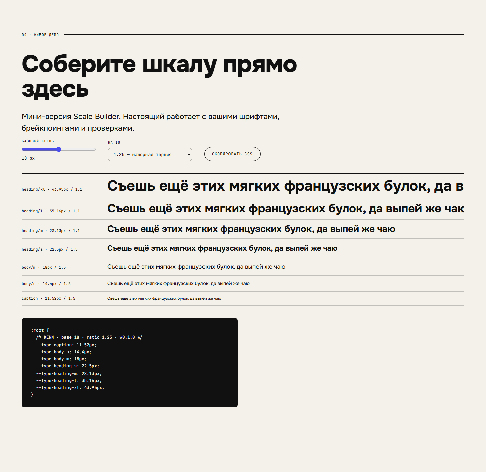
Лендинг и платформа открываются прямо из кейса. Поводите мышью по hero, соберите шкалу в демо, пройдите онбординг, поменяйте ratio в Scale Builder и посмотрите, как пересобирается экспорт. Языки переключаются на любом экране.
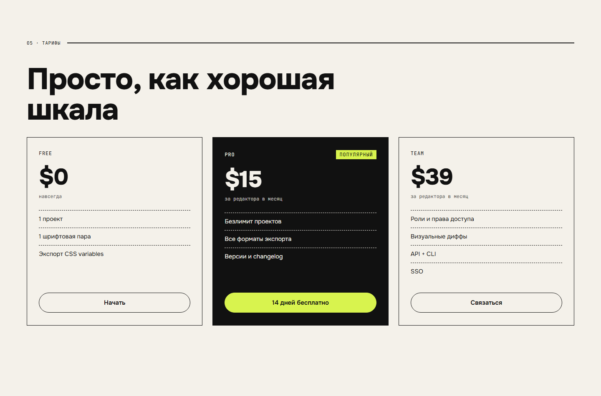
Что я думаю системами: в кейсе виден весь путь от принципа к токену и от токена к коду — ratio превращается в шкалу, шкала в токены, токены в CSS, и всё это с версиями, проверками и двумя языками. И что смелая типографика и рабочая дисциплина продукта не противоречат друг другу — просто живут на разных слоях.